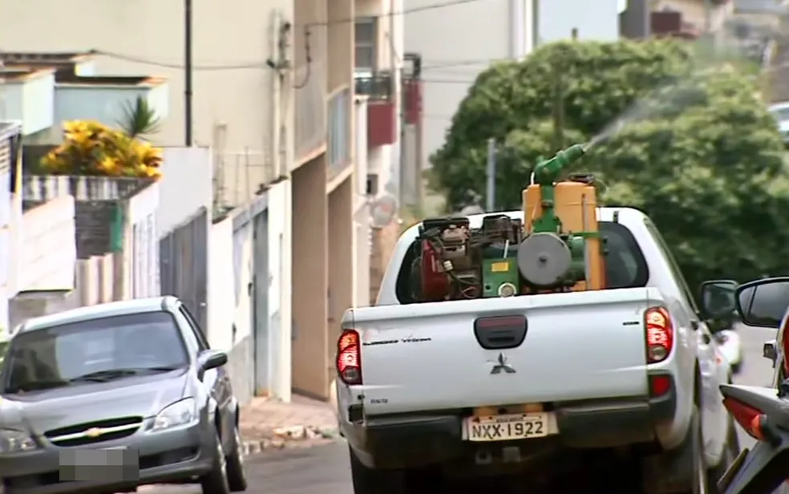

MP instaura inquérito para investigar medidas de
combate à dengue da Prefeitura de Passos.

No contexto mencionado, o Ministério Público instaurou um inquérito
para investigar as condutas da Prefeitura de Passos no enfrentamento
da epidemia de dengue na cidade. Com mais de 9 mil casos prováveis de doença
registrados apenas este ano e três mortes confirmadas,
além de outras quatro em investigação, a situação exigiu ação por parte
das autoridades.
A instauração do inquérito ocorreu após
denúncias feitas pela Comissão de Saúde da Câmara Municipal,
alegando que a administração municipal não havia adotado
as medidas necessárias para prevenir a prevenção da dengue. Em uma reunião que
durou cerca de duas horas, representantes do Ministério Público, Secretaria
Municipal de Saúde, Superintendência Regional de Saúde e
Comitê de Saúde da Câmara Municipal discutiram as ações
imediatas a serem tomadas e identificaram falhas e problemas na
atuação da prefeitura no combate à dengue.
O Promotor de Justiça Eder Capute deu à prefeitura um prazo
de 10 dias para responder a uma série de questionamentos relacionados ao enfrentamento
da dengue em Passos.
A Secretaria Municipal de Saúde, em resposta à afiliada da Rede Globo,
EPTV, afirmou que todas as medidas foram perdidas,
mas que a chuva atrapalhou o andamento e o cumprimento das metas protegidas.
Além disso, informaram que algumas ações serão implementadas,
incluindo uma revisão do código de posturas do
município para possibilitar a aplicação de multas aos
proprietários de terrenos sujos. Essa proposta será enviada à Câmara Municipal.
O inquérito do Ministério Público visa investigar as circunstâncias
e tomar as medidas de execução para responsabilizar as partes envolvidas,
bem como implementar medidas corretivas para
lidar com a epidemia de dengue em Passos.